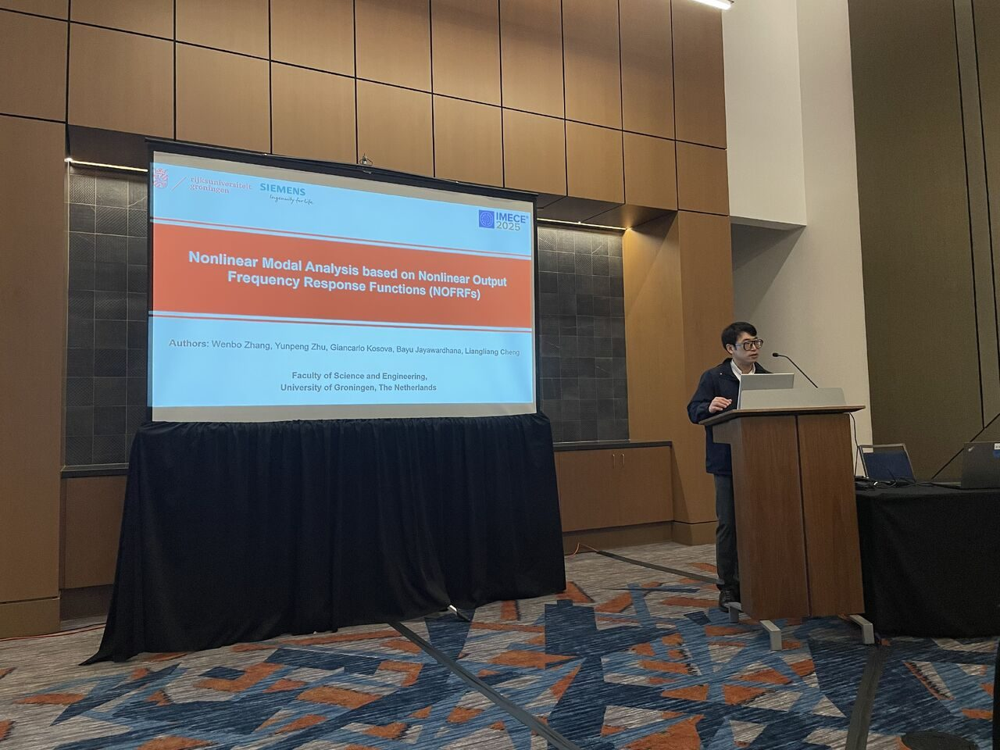
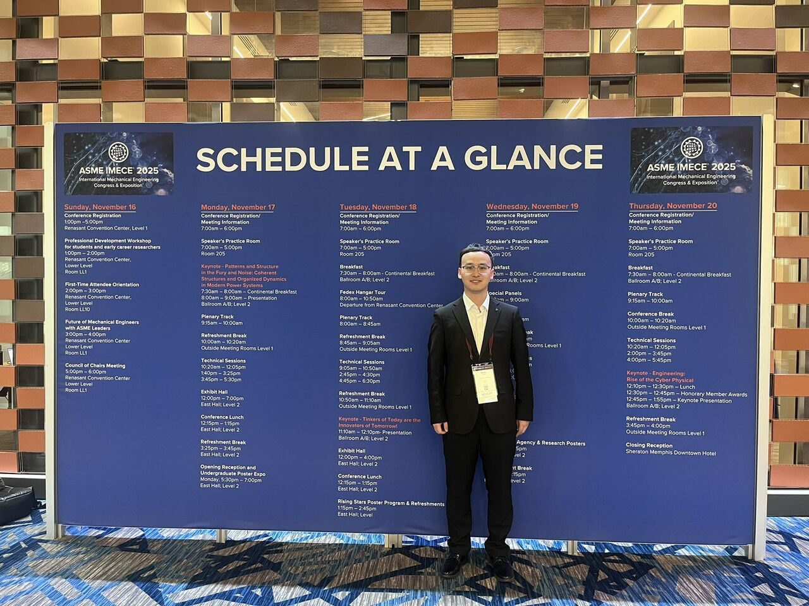
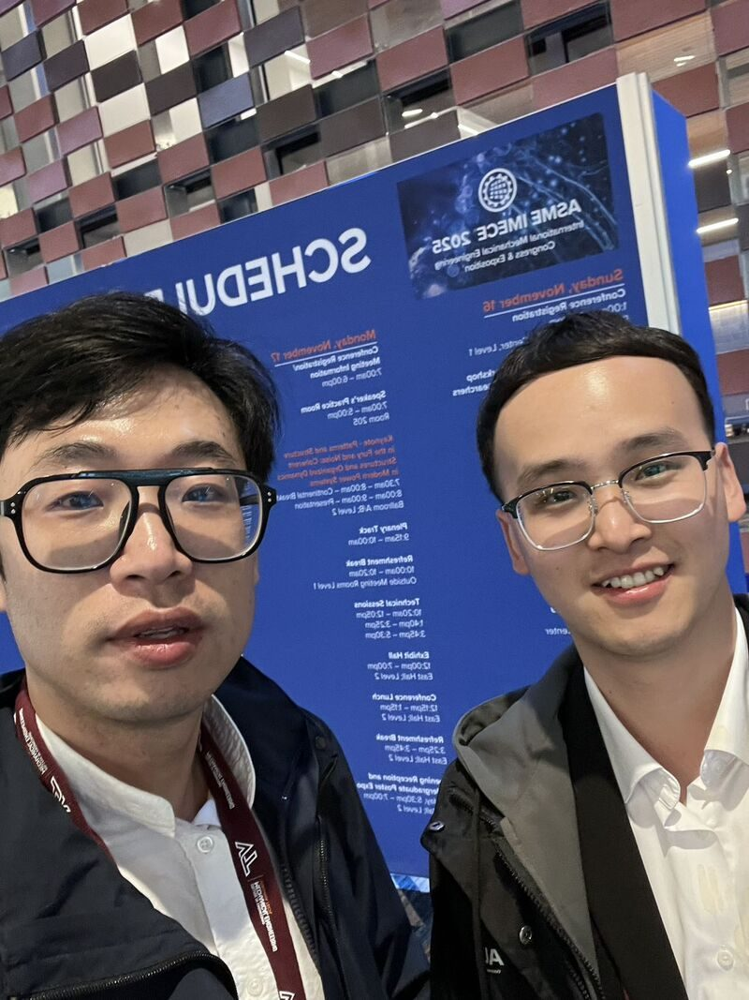

November 2025
ASME IMECE 2025 presentations on nonlinear dynamics and modal analysis
Dr. Cheng attended ASME (The American Society of Mechanical Engineers) IMECE 2025 together with PhD student Wenbo Zhang in Memphis, US. They both gave oral presentations on recent work in nonlinear dynamics and modal analysis:
- The Generalized Frequency Response Functions of Multiple-Input Multiple-Output Nonlinear Systems: A Probing Evaluation Algorithm
- Nonlinear Modal Analysis Based on Nonlinear Output Frequency Response Functions (NOFRFs)
The group thanks all co-authors for their valuable contributions and continuous support:
- Prof. Bayu Jayawardhana from University of Groningen
- Dr. Giancarlo Kosova from Siemens Digital Industries Software
- Dr. Yunpeng Zhu from Queen Mary University of London
The conference offered inspiring opportunities to exchange ideas with international researchers working on dynamics, monitoring, and structural health assessment.
Dr. Cheng also co-chaired a technical session together with Prof. Yanfeng Shen from the University of Michigan-Shanghai Jiao Tong University Joint Institute. The group looks forward to welcoming more exciting contributions at IMECE next year.


